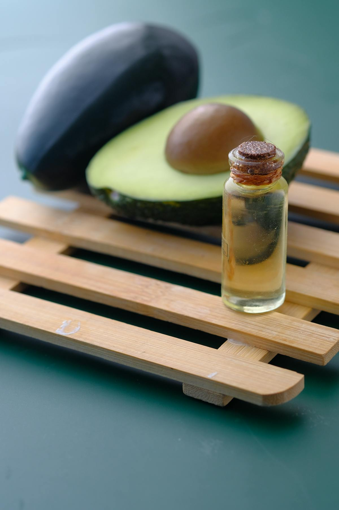

牛油果油
快速回答
牛油果油富含油酸，也提供叶黄素和维生素 E。它烟点较高，是较高温烹饪中很实用的油脂选择之一。
它是什么
牛油果油从成熟牛油果果肉中提取，不同于多数从种子中提取的烹饪油。未精炼牛油果油味道温和、略带奶油感，颜色偏淡绿色；精炼牛油果油味道更中性，烟点更高。
牛油果油常用于高温烹饪、沙拉酱、出锅后淋油，也用于化妆品。它味道中性、用途广，是很实用的日常烹饪油。
为什么牛油果油可能支持抗炎饮食
牛油果油大部分脂肪来自油酸，这种单不饱和脂肪酸也是橄榄油成为地中海饮食重要组成的原因之一。油酸在多项饮食研究中与心血管和炎症相关指标一起被提到。
牛油果油含有叶黄素和维生素 E。叶黄素是脂溶性类胡萝卜素，和脂肪一起食用时更容易吸收；维生素 E 则参与细胞膜抗氧化保护。
关键营养和化合物
一汤匙牛油果油主要提供脂肪和热量，其中以单不饱和脂肪为主，并含有少量维生素 E 和叶黄素。它不提供碳水化合物、蛋白质或纤维。
潜在健康益处
- 油酸含量高，脂肪酸结构与橄榄油有相似之处。
- 含有叶黄素，参与眼部健康和抗氧化相关讨论。
- 精炼牛油果油烟点高，适合较高温烹饪。
- 味道中性，可用于熟食和冷拌。
- 能帮助吸收同餐中的脂溶性营养。
牛油果油怎么吃
- 作为较高温煎炒和烤制的主要烹饪油。
- 把未精炼牛油果油淋在成品菜上。
- 用牛油果油、柠檬汁和香草做沙拉酱。
- 用于高温烤蔬菜和蛋白质。
- 在部分烘焙中替代黄油，作为乳制品外的脂肪选择。
购买和储存
如果用于冷拌或出锅后淋油，可以选择冷压、未精炼牛油果油。用于烹饪时，精炼牛油果油烟点更高、味道更中性。放在阴凉避光处保存，并尽量选择可靠品牌，因为市面上部分牛油果油可能存在掺假问题。
FAQ
牛油果油比橄榄油更健康吗？
两者都是油酸来源。橄榄油，尤其特级初榨橄榄油，研究更多且多酚更高；牛油果油烟点更高，适合高温烹饪。两者都可以实用。
牛油果油烟点是多少？
精炼牛油果油烟点较高，适合多数烹饪方式。未精炼牛油果油烟点较低，但仍适合很多家庭烹饪。
怎么判断牛油果油是否纯正？
优质未精炼牛油果油通常带淡绿色和温和奶油香。建议购买提供检测或来源说明的可靠品牌。
牛油果油可以护肤吗？
牛油果油也用于化妆品，但本页关注饮食用途。作为食物，它主要提供油酸、维生素 E 和叶黄素。
证据说明
关于牛油果油本身的研究少于橄榄油，但它的油酸含量把它和单不饱和脂肪研究联系起来。小型研究也关注它对血脂和叶黄素吸收的影响。
本页将牛油果油作为抗炎饮食中可以辅助搭配的一种食物来介绍，而不是把它作为单独的治疗方法。